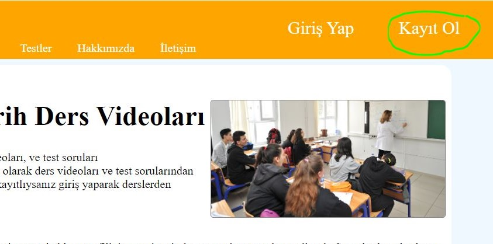

Ücretsiz Tarih Ders Videoları
Liseli öğrencilerimize özel tarihi ders videoları ve test soruları bulunmaktadır.Sitemize kayıt olarak ders videoları ve test sorularından faydalanabilirsiniz.Sitemize kayıtlıysanız giriş yaparak derslerden yararlanabilirsiniz.
Sitemizdeki videoları ve testleri tamamladıkça profilinize yeni resimler ve yeni çerçeveler verilecektir. Sınavlarda yüksek not aldıracak kısa ve yeni müfredata uygun ders videoları bulunmaktadır.Sitemizde Sınav sorularına benzeyen konu tekrar testleri de bulunmaktadır.Yarın sınavınız da olsa hiç stres yapmayın çünkü yanınızda Tarih Kafası var.Bir üniteyi anlamak için artık bir sürü video izlemenize gerek yok.Tarih Kafası sizlere bir ünite için birkaç videoda anlatmakta ve sizlere konu ile alakalı testler sunmaktadır.
Tarih Kafası'nın Size Katkısı Nedir?
Tarih kafası sizlere ücretsiz dersler ve testler sunmaktadır.Öğrencileri destekleyen bir sitedir. Sitemiz öğrencilerimize okul sınavı için hazırlamaktadır.Öğrencilerimize sınavlardan yüksek not almarı için uğraşmaktayız. Bunun için anlaşılır kısa videolar ve testler sayesinde okul sınavlarında korkmanıza gerek kalmıyor.Çünkü bu site sizin için yapıldı. Kayıt olarak sizde derslerden ve testlerden yararlanabilirsiniz.Sitemizde Türk Tarihini öğrenebilirsiniz.Örneğin Türklerin Orta Asya'dan çıkışından tutun da o zaman ki yönetim koşullarına kadar, geçmişten günümüze hangi Türk devletlerinin olduğunu,Türk Padişahları,Devlet yönetim sistemini,Savaşlarımızı,Antlaşmalarımızı, eğitim sistemimizi, askeri koşulları vb. öğrenebilirsiniz.
Tarih Kafası Kısaca...
- Kısa Ders videoları.
- Bölüm Sonu Testler.
- Dersleri ve testleri yaptıkça yeni avatar çerçeve ve yeni profil fotoğrafları.
- Tarih Kafası'dan her şey ücretsiz.
- Kayıt olmak ücretsiz.
- Genel kültür bilginizi genişletmek.
- Tarihimizi öğrenmek.
Profil Avatarı Nelerdir ?
Sitemizdeki Ders videolarını ve konu tekrar testlerini çözdüğümüz zaman, profilimize çerçeve ve yeni profil resimleri kazanıyorsunuz. Derslerden veya testlerden kazandığınız profil çerçevesi izlediğiniz videoların ve çözdüğünüz testlerin o zamana ait olan süsleme motifi ile olcaktır.Aynı şekilde profil resimleride o zaman ki önemli tarihi kişilerin resimlerinden olacaktır.Eğer Tarih Kafası sitesine kayıt olmadan Ders videolarını izleyip ve testleri çözerseniz, profilinize çerçeve veya yeni resimleri kullanamazsınız.
Tarih Kafası Sitesine Nasıl Kayıt Olunur:
Tarih Kafası sitesine kayıt olmak için menü çubuğundan kayıt ol'a tıklayarak kayıt olma bölümüne gidilir. Kayıt olma bölümünde e-posta'nızı girip kullancı adı ve şifre oluşturarak Tarih Kafası sitesine kayıt olabilirsiniz. Kayıt olduğunuz profile girebilmek için menü çubuğundan giriş yap kısmına tıklayarak giriş yapma bölümüne gidilir. Giriş yapma bölümünde kullanıcı adınızı ve şifrenizi girip giriş yap butonuna tıklarsanız profilinize girebilirsiniz.
Tarih Kafası©-sitenin kaynakça bölümü ==> Kaynakça